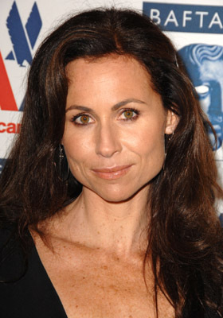
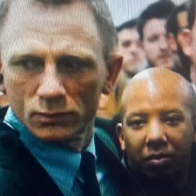
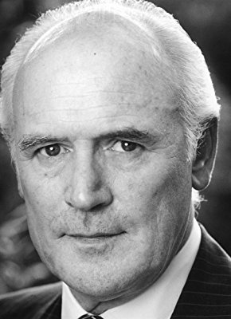

#3114 Das Hält kein Jahr ...!
Alternativ: I Give It a Year

 IMDB-Wertung: 5.7 / 10
IMDB-Wertung: 5.7 / 10  Metascore: 50
Metascore: 50 
Ein Blick genügt und es ist klar: Nat und Josh gehören zusammen – Hals über Kopf stürzen sie sich in die Ehe. Doch bei der Trauung bleibt dann nicht nur dem Pfarrer das „Hiermit erkläre ich euch…“ im Halse stecken, auch sonst ist niemand so wirklich von dem jungen Glück überzeugt. Und der Alltag gibt ihnen Recht: Unterschiedlicher kann ein Paar kaum sein. Da hilft dann auch keine Paartherapeutin mehr - vor allem wenn diese noch nicht mal selber an die Ehe glaubt – und Joshs bester Freund Danny, für den Takt- und Schamgefühl zwei Fremdwörter sind, gibt dem Ganzen noch den Rest. Als schließlich der smarte Geschäftsmann Guy in Nats Leben tritt und Chloe, Joshs Ex-Flamme, mit der er eigentlich nie offiziell Schluss gemacht hat, wieder auftaucht, ist das Chaos perfekt…
Jahr: 2013
Dauer: 97 Minuten
FSK: 12
Land: England Studio: StudioCanalTonspuren: DTS - ,
Untertitel: Deutsch,
Auflösung: 1080p (1920x800) Größe: 8232 MB
Genre: Komödie, Liebe
Regisseur: Dan Mazer
Drehbuch: Dan Mazer
Soundtrack: Ilan Eshkeri
Darsteller:
 Rose Byrne als Nat
Rose Byrne als Nat Rafe Spall als Josh
Rafe Spall als Josh Alex Macqueen als Minister
Alex Macqueen als Minister Stephen Merchant als Danny
Stephen Merchant als Danny- Jane Asher als Diana
-  Minnie Driver als Naomi
 Jason Flemyng als Hugh
Jason Flemyng als Hugh- Nigel Planer als Brian
 Clare Higgins als Elaine
Clare Higgins als Elaine Anna Faris als Chloe
Anna Faris als Chloe- Kevin Moore als Toastmaster
 Olivia Colman als Linda
Olivia Colman als Linda- Alisha Bailey als Kate
- Kerry Howard als Clare
- Daisy Haggard als Helen
 Simon Baker als Guy
Simon Baker als Guy- Joseph Millson als Charlie
- Daisy Donovan als Partygoer
- William Andrews als Joke Thief
- Derek Hutchinson als Business Guy
- Hasina Haque als Preeta
- Anna Skellern als Claudia
 Lee Asquith-Coe als Party Goer , uncredited
Lee Asquith-Coe als Party Goer , uncredited-  Leon Corbin als Passerby , uncredited
- Sam Creed als Euro Star Man , uncredited
 Bron James als Wedding Guest , uncredited
Bron James als Wedding Guest , uncredited- Debra Leigh-Taylor als Wedding Guest & Party Goer , uncredited
 João Costa Menezes als Client , uncredited
João Costa Menezes als Client , uncredited- Marcus Sinclair als Pool bar Patron , uncredited
- Senem Temiz als Client , uncredited
 Glenn Webster als Eurostar Staff , uncredited
Glenn Webster als Eurostar Staff , uncredited-  Terence Harvey als Alec
- Maisy Mazer als Bridesmaid
- Matilda Thykier als Bridesmaid
- Tim Key als Alan
- Djalenga Scott als Alexandra
- Sue Wallace als Janet
- Pandora Colin als Jane
- Martin Trenaman als HR Man
- Dustin Demri-Burns als Dove Violinist
- Clare Welch als Granny
- Audrey Nicholson als Woman with Taxi
- Peter Mair als Man with Taxi
- Paul Blackwell als Waiter at Wedding , uncredited
- Eva Dagoo als Fireworks guest , uncredited
- Ray Donn als Eurostar Passenger , uncredited
- James Fiddy als Wedding guest , uncredited
- Salem Hanna als Bonfire Party Attendant , uncredited
- James Hare als Jenny's husband , uncredited
- Craig Izzard als Customer , uncredited
Datei: X:\2013(G-H)\Hält kein Jahr ...!, Das (2013, FSK12, 1920x800).mkv seit 28.01.2016
Festplatte: HD 2012(N-Z)-2013(A-H)
 Es gibt insgesamt 43 Filme in der Gruppe '2013(G-H)'
Es gibt insgesamt 43 Filme in der Gruppe '2013(G-H)'